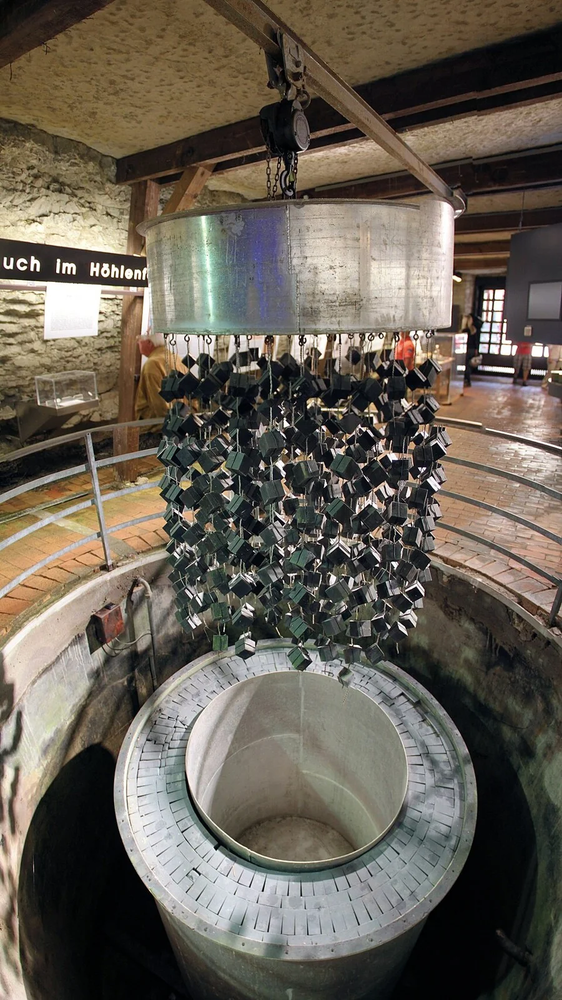
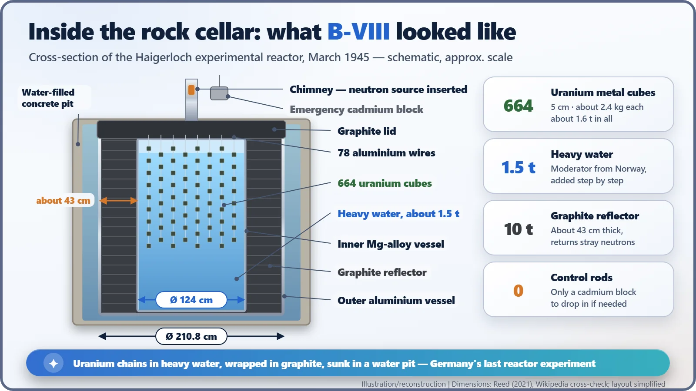
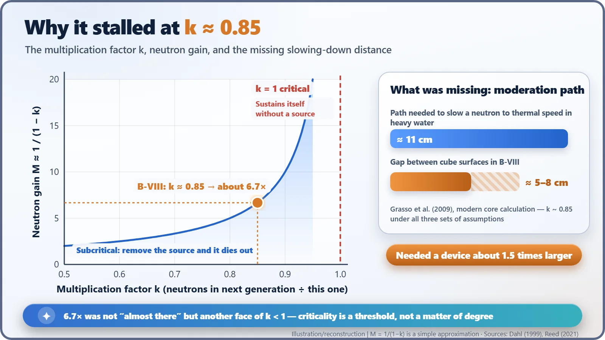
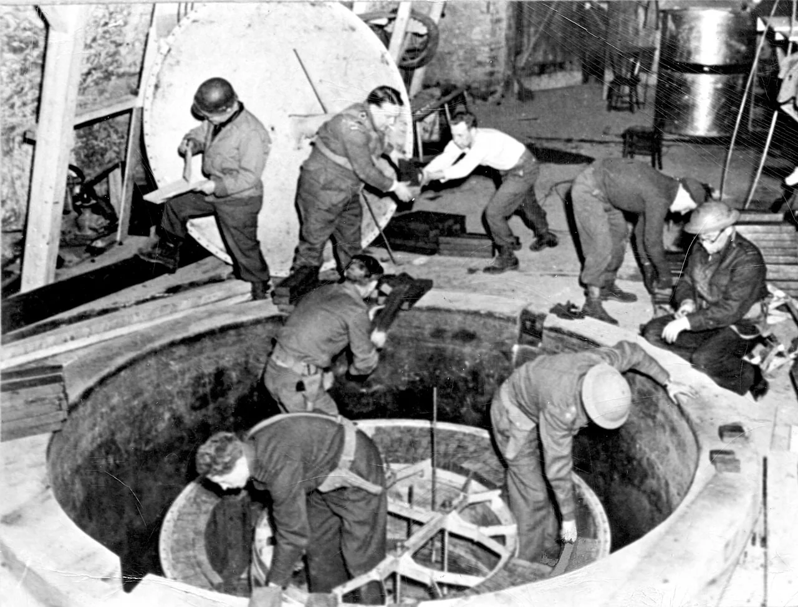
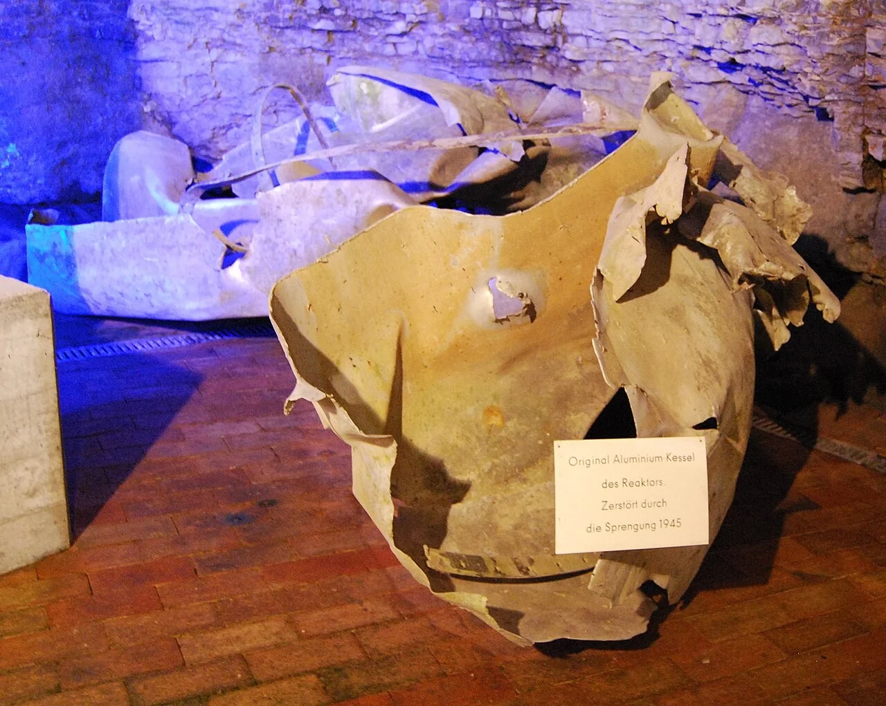

Nuclear History · 111
664 Uranium Cubes on Chains, and a Fire That Never Caught — Germany's Haigerloch Reactor B-VIII (1945)
Germany's last and largest reactor experiment multiplied neutrons 6.7-fold in a cellar under a church, but stopped short of criticality.
In March 1945, in a rock cellar beneath a church in the small town of Haigerloch, German physicists hung 664 uranium cubes in about 1.5 tonnes of heavy water and tried to start a chain reaction. Neutrons multiplied 6.7-fold, but the multiplication factor k reached only about 0.85, short of the 1 needed for criticality. Six weeks later the Alsos Mission dismantled the reactor; today the cellar is a museum.
In a small museum in Haigerloch, a town in south-west Germany, two dark metal cubes sit in a display case. Each is 5 cm along an edge and weighs about 2.4 kg — the size of a child's building block with the heft of a small dumbbell. In March 1945, in the rock cellar right beneath that case, cubes like these were the fuel of B-VIII, the last and largest German attempt to build a working nuclear reactor. It came close to waking up. It never did.
A reactor moves into a cellar under a church
From 1943, as Allied bombing grew heavier, Berlin's Kaiser Wilhelm Institute for Physics moved much of its work south-west to Hechingen. Only the reactor-experiment bunker stayed in Berlin. [1]
The physicist in charge of the programme, Walther Gerlach (1889–1979), looked for a safer refuge and chose Haigerloch, about 16 km (10 miles) from Hechingen. Under the town's Schlosskirche (castle church), a cellar had been cut into the limestone cliff for storing drink, with 20–30 m of rock overhead. The lease was signed on 29 July 1944, at 100 Reichsmarks a month. [5]
At the end of January 1945, with Soviet forces closing on Berlin, Gerlach ordered the reactor group out. Sources disagree on the date of the order — 27 January or 30 January. A convoy left Berlin on 31 January carrying uranium, heavy water and graphite, and after a detour it reached Haigerloch only at the end of February. [1] [5]
A chandelier of uranium
Assembly was finished in the first week of March. The reactor looked less like a machine than a giant chandelier.

The builders threaded 664 cubes of natural uranium metal onto 78 aluminium wires, eight or nine cubes to a wire, and hung the whole bundle from a lid. The chains were lowered into an inner vessel of magnesium alloy, which was then filled with about 1.5 tonnes of heavy water from Norway. [1]
Why heavy water? Neutrons released by fission are too fast to split the next uranium nucleus efficiently; they need to be slowed down first. Heavy water — water made with the heavy form of hydrogen — slows neutrons well while swallowing very few of them. That makes it an excellent moderator.
Around the inner vessel stood a graphite wall about 43 cm thick (about 10 tonnes), a reflector that bounced escaping neutrons back into the core. All of this sat inside an aluminium vessel 210.8 cm across, which in turn stood in a concrete pit filled with ordinary water. [5]

One thing was missing: control rods. If the reaction ran away, the plan was to drop a block of cadmium, a strong neutron absorber, down the chimney in the lid. [1]
Pour, pause, count
In early March came the decisive run. A neutron source was lowered through the chimney, and heavy water was poured in a little at a time. After each step the team stopped and measured how much the neutron population had grown. Werner Heisenberg (1901–1976) is said to have sat in the cellar calculating non-stop.
With all the heavy water in, the neutron density was 6.7 times higher than in the empty arrangement. But the multiplication factor, k, stood at only about 0.85. A self-sustaining chain reaction needs k to reach 1. [5]
Why "6.7 times" still meant failure
The factor k tells you how many neutrons one generation produces in the next. At k = 0.85, every 100 neutrons become 85, then 72, and so on — the chain shrinks. A neutron source that keeps injecting new neutrons, though, stacks up many of these shrinking chains, so the total looks larger than the source alone. In the simplest approximation the gain is 1/(1 − k); for k = 0.85 that is about 6.7. In other words, "6.7 times" and "k ≈ 0.85" are two faces of the same subcritical state. Take the source away and the activity dies out. Criticality is not a matter of degree; it is a threshold.

The team estimated that the assembly would have needed to be about 1.5 times larger to go critical — but there was no more uranium or heavy water to be had. In 2009 a group of Italian nuclear engineers modelled B-VIII with modern reactor-design software; under all three sets of assumptions they got k of about 0.85. They traced the problem to geometry: a neutron needs to travel about 11 cm through heavy water to slow to thermal speed, but the gaps between neighbouring cube surfaces were only about 5–8 cm, depending on direction. [1] [2]
During the last measurements, Karl Wirtz (1910–1994), who led the experiment with Carl Friedrich von Weizsäcker, also found that graphite was a better moderator than the Germans had assumed — a realisation that overturned an earlier decision to abandon graphite, but came far too late. By then, in the United States, large production reactors at Hanford were already making plutonium.
23 April: the cave's last visitors
French troops entered Haigerloch on 22 April 1945 but did not notice the laboratory underground. The next day Colonel Boris Pash arrived with Alsos, the Allied scientific intelligence mission, and on 24 April British and American officers dismantled the reactor. Heisenberg had left a few days earlier, by bicycle, to join his family in Bavaria. [1] [4]

The uranium and heavy water had already been hidden. The heavy water turned up in petrol cans at a country mill; 659 of the 664 cubes were dug out of a field next to the church. [1] [5]
What happened to the cave itself is told two ways. One historical account says the officers blew up the cave. The museum's own staff wrote in 2001 that Pash ordered only a very limited explosion, which destroyed the remaining outer vessel, after the local priest argued that a bigger blast would bring down the baroque church above. [1] [3]

What was left instead of a fire
In 1980 the cave reopened as the Atomkeller Museum. A full-size replica reactor now stands in the original pit, and two of the five surviving original cubes are on show. In 2015 a European team analysed metal from one of the cubes: it was unenriched uranium from ore mined at Joachimsthal (today Jáchymov in the Czech Republic), with no sign of prolonged neutron irradiation. [1] [5]
B-VIII was a reactor experiment, not a bomb, and even so it never crossed the threshold of criticality. Two small cubes in a glass case now mark that distance, quietly.